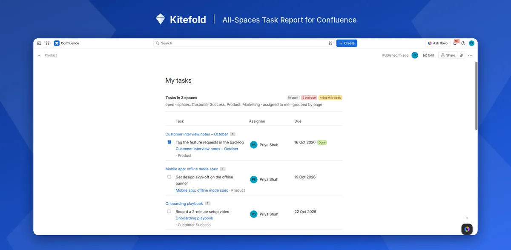

How to see all the Confluence tasks assigned to you
Select your profile picture in Confluence and choose Tasks: it lists the tasks assigned to you across all spaces. If you want the same list on a team page, where everyone who opens it sees their own tasks, use a report set to Assignee: Me.
With Confluence on its own: the Tasks list
- Select your profile picture at the top right and choose Tasks. (On some sites it's also in the menu on Confluence's Home.)
- You see the tasks assigned to you, and you can switch to the tasks you created for other people.
- Use the filters to narrow by due date, space, page or who created the task, and tick a task to complete it on its page.
The Task report macro can also list one person's tasks: set Assigned to to their name and list the spaces to search.
Where it falls short
- It's a personal screen, not part of a page. You can't put the Tasks list on a team page, and it shows no counts of how many are open or overdue.
- The Task report names fixed people. A report set to Priya shows Priya's tasks to everyone; it can't show each viewer their own.
- Only the first @mention is the assignee. If a task mentions two people, it only appears in the first person's list.
In one step with All-Spaces Task Report
- Add All-Spaces Task Report to a team page (type
/while editing). - In its settings, set Assignee to Me (whoever is viewing). Group by page or due date if you like.
- Publish. Everyone who opens the page sees their own open tasks from every space, with counts of open, overdue and due this week.
One page then works for the whole team: there's nothing to set up per person. Tick tasks done from the list; the change is made on the task's page, as the viewer.

Disclosure: Kitefold makes All-Spaces Task Report, so we're not neutral. The built-in options above are free and may be all you need.
Related guides
- How to see all tasks across Confluence spaces
- How to find overdue tasks in Confluence
- How to send a weekly reminder for overdue Confluence tasks
Checked against Confluence Cloud in November 2026. Confluence changes often; if something here no longer matches what you see, email support@kitefold.app and we'll update it.